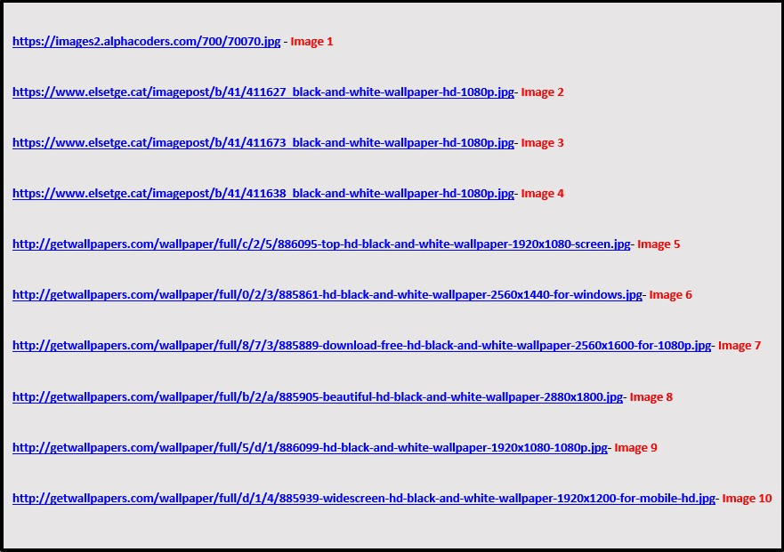
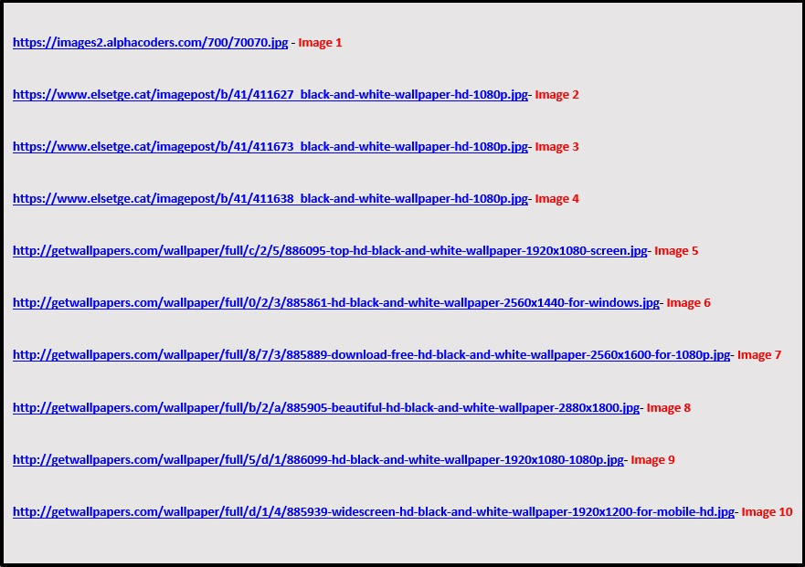

Evaluation and review
Within my evaluation and review I will be performing numerous tests to see the quality of my webpage. I will display an image to show proof of testing. The first test is validating my HMTL. This is done to see if there’s any problems with my mark-up. A good validation means that our webpages will respond and perform to the ideal stand, this also prevents any problems when introducing further code as well as when styling. Down below you can see that I have tested my pages and that I have no errors or warnings within my HMTL across all my webpages.


The second test is checking the CSS validation is correct. Same as the HTML validator, the CSS validator will check our stylesheets for any errors that may affect the presentation of our webpage. Down below you can see an image displaying my stylesheet being validated, which shows no errors have occurred.

Another test I performed was testing my webpages on a mobile device. This was to test my webpages responsive re-sizing. This may happen when shrinking the browser or accessing my page on another device. This was performed to test whether my webpage is responsive as well as if it's user friendly, this means whether it's functional and easy to use. Down below you can see how my webpage compresses when seen on mobile or the browser is resized.

I performed a browser compatibility test which is where you emulate your webpages on different browsers with different version types. This was done to see the effects different browsers and versions have when using your webpage. From the test I achieved good results meaning that my webpage was able to use the modern version of popular browsers such as google chrome and Firefox. However old versions were unable to load my page, this could be a problem with my document as the browser may not support it. Overall I achieved goods results on common browser engines.
Next, I performed a google mobile friendly test. This determined whether my webpages are user friendly when seen on a mobile device as well as to test if the functions work. Down below you can see an image stating that I have passed the test.

The final test I performed was a colour contrast checker which determines whether your text is readable and identifiable. This will make sure that your webpage is readable to other users. Down below you can see what score I achieved.

Now I have performed all my tests I can confirm that my webpage is able to perform effectively across modern version browser as well as having the ability to work on mobile devices while also being user friendly. All the tests will be listed within the reference section for use.


 
